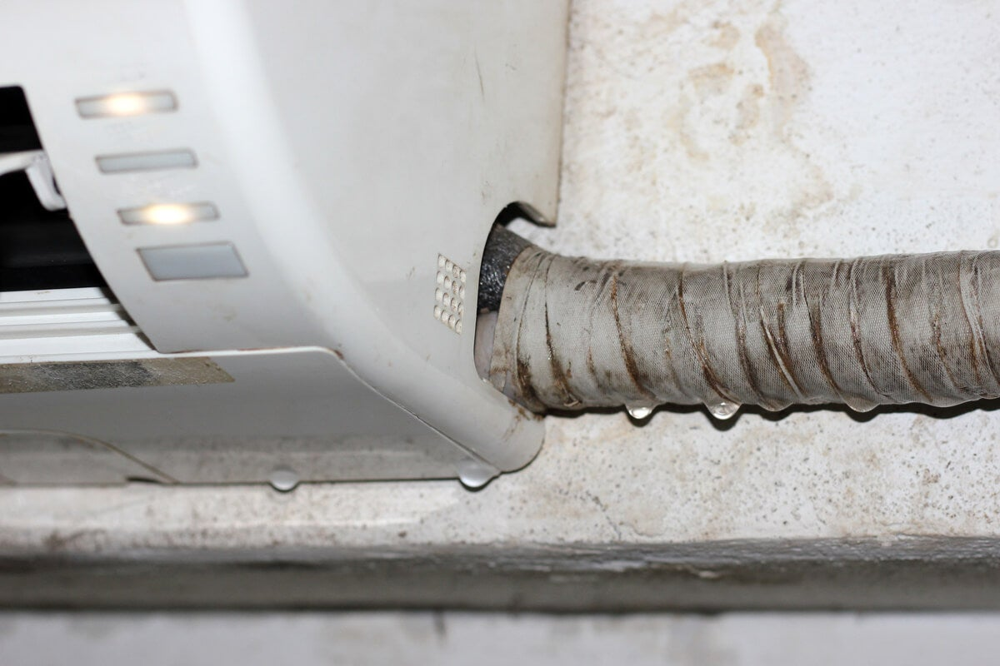
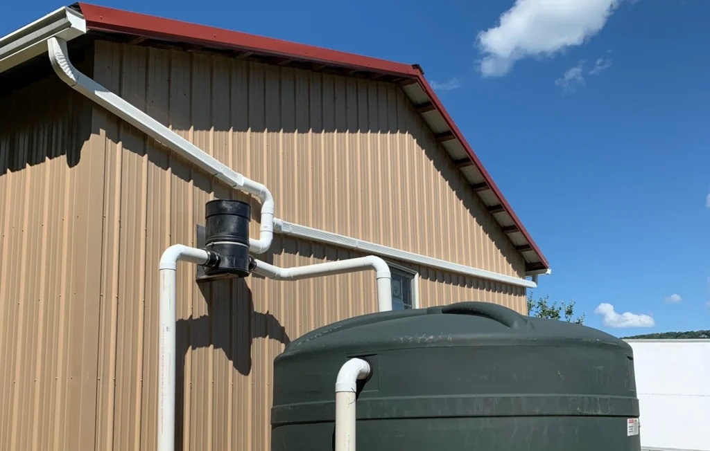
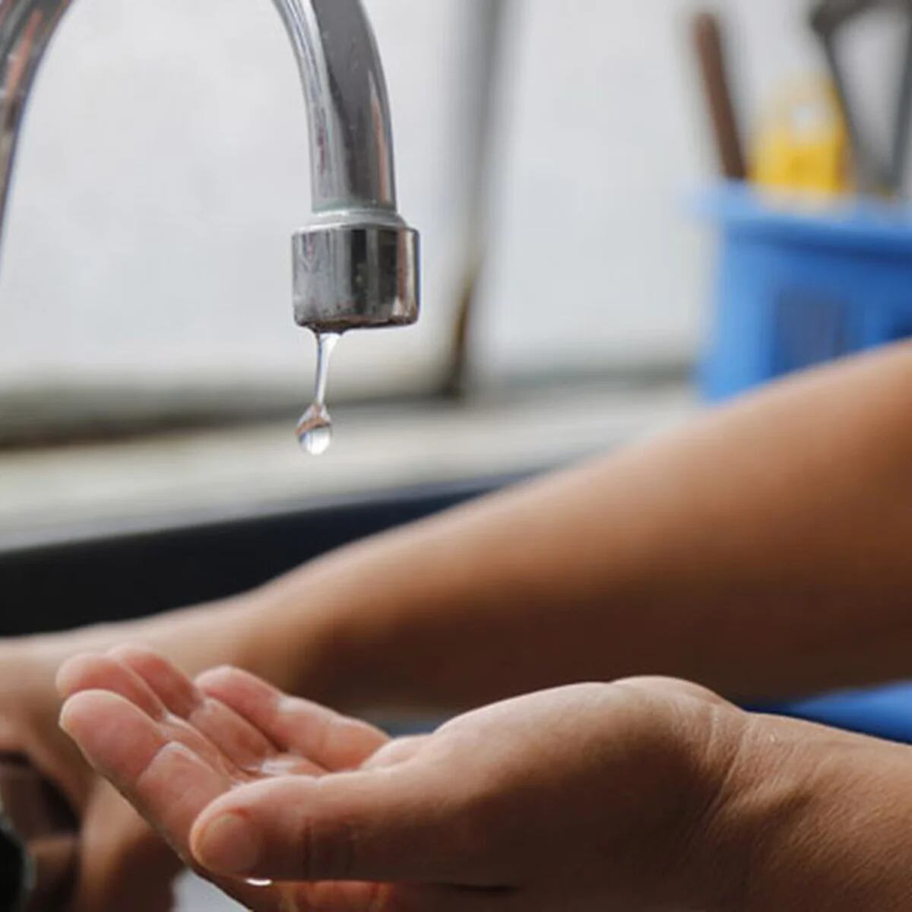
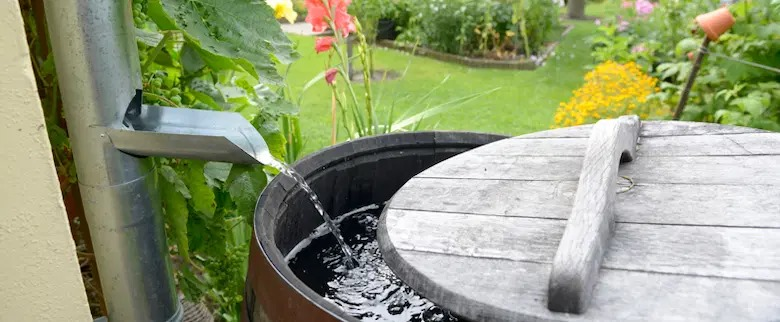
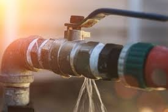
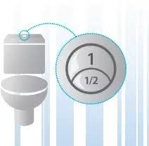
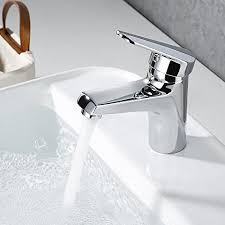
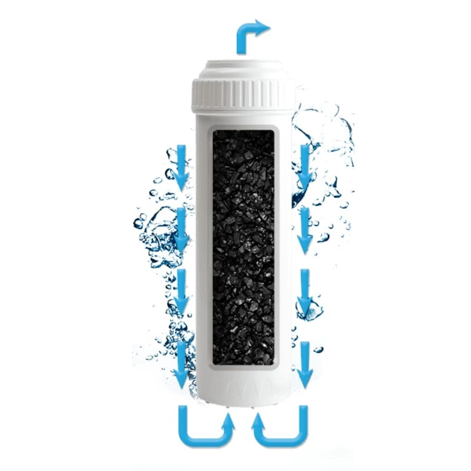

La idea de la Reutilización de residuos de agua de climas es tomada en cuenta ya que para nosotros son importantes los desechos de estos, porque si no hay un cuidado de los residuos pueden generar humedad u otros daños que pueden dañar paredes, metales, entre otras estructuras y cosas dentro del plantel.
Consiste en la instalación de canaletas en el plantel, esto para que cuando llueva el agua de lluvia sea redirigida por medio de canaletas hacia una cisterna en la cual se almacenará el agua que posteriormente podría ser usada para baños o limpieza del plantel. Estas canaletas estarían instaladas en los techos de la mayoría de los salones del plantel para así poder almacenar mayor cantidad de agua de lluvia, y poder tener una reserva en los días que no haya agua, incluso podríamos pasarla por filtros para volver aún más limpia y que se pudiera usar para lavarse las manos o la cara.
Esta idea proviene de obtener la mayor cantidad de agua “gris” para poder filtrarla y volver a utilizarla en los desechos sanitarios del plantel, al igual que agua utilizada para lavabos esta será filtrada para volver ser utilizada en los lavabos y así ahorrar agua.
Consiste en obtener suficiente agua de lluvia por medio de botes o por medio de las canaletas ya mencionadas, para luego ser pasada por un filtro que hará que el agua se limpie para que pueda ser agua usable, teniendo en cuenta esto, el plantel se abastecerá de agua limpia para su uso en los sanitarios y en casos de escasez.
Tiene como finalidad tener control y gestión del consumo de agua en el plantel garantizando su calidad y evitando su degradación.
Este concepto garantiza agua que se encuentren en perfectas condiciones, dándoles el mantenimiento preventivo y correctivo que requieren para guardar un agua limpia y segura. Beneficios de contar con una cisterna de agua MN Home CenterDebemos asegurarnos de que cada seis meses, cisternas y tanques confinados al almacenamiento de agua reciban el mantenimiento adecuado También podemos procurar mantenerlas alejadas de grandes árboles o plantas, para evitar que las raíces las abracen o las hojas puedan llegar a infiltrarse.
Prevenir y mantener las fugas de agua en una escuela tiene múltiples beneficios y es esencial por varias razones. Primero, la conservación del agua es crucial, ya que evita el desperdicio de este recurso vital y contribuye a la sostenibilidad ambiental, reduciendo la presión sobre las fuentes locales. Además, reduce los costos operativos, pues se ahorra en las facturas de agua y se evita incurrir en reparaciones mayores y costosas debido a daños estructurales. La protección de la infraestructura es otro beneficio significativo. Prevenir las fugas evita daños a las paredes, techos, pisos y cimientos, lo cual mantiene la integridad del edificio escolar. Esto asegura un entorno seguro y saludable para estudiantes y personal, previniendo problemas de salud como la formación de moho y hongos, y evitando accidentes en áreas húmedas y resbaladizas.
El mecanismo de doble descarga tiene un pulsador doble que da la opción de realizar una descarga parcial de 3 litros de agua o la descarga total de la cisterna. La descarga completa se utiliza para deshacerse de los desechos sol, mientras que la descarga parcial es realizada para líquidos. Este mecanismo de cisterna de doble carga nos va a permitir ahorrar mucha agua ya que puede ahorrar hasta un 50 por ciento de agua en cada uso.
La instalación de grifos tipo monomando en el plantel es esencial para reducir el consumo de agua. Estos grifos ofrecen un control preciso del flujo y la temperatura del agua, lo que facilita su uso y evita el desperdicio. Con tecnologías de ahorro de agua, como aireadores y sensores de movimiento, estos grifos promueven la eficiencia y educan a los estudiantes sobre la importancia de la sostenibilidad. En resumen, los grifos monomando son una solución práctica y educativa para reducir el consumo de agua en el plantel.
La idea principal es instalar dispositivo que eliminan las impurezas con las que llega el agua “reciclada”. eliminan diferentes elementos, las bacterias y el óxido que podría traer el agua, haciéndola más pura y de mejor calidad para el uso en el plantel. Otra forma de filtrar el agua sería el uso de carbón activado, esta emplea gránulos de carbón para bloquear contaminantes atrapándolos mediante la “adsorción”, este significa que es un proceso mediante el cual los líquidos y gases son atraídos por otros líquidos o sólidos.
